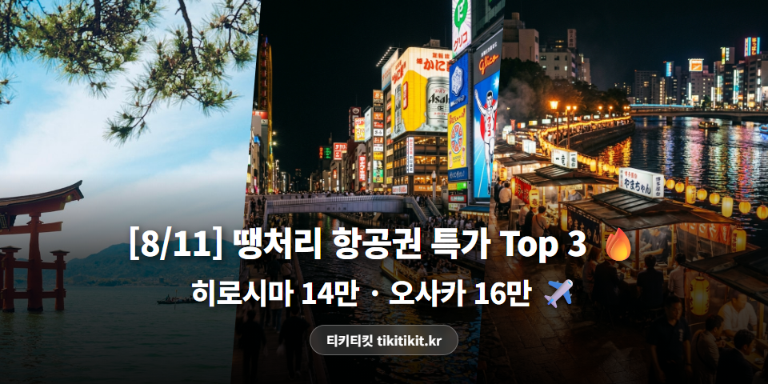
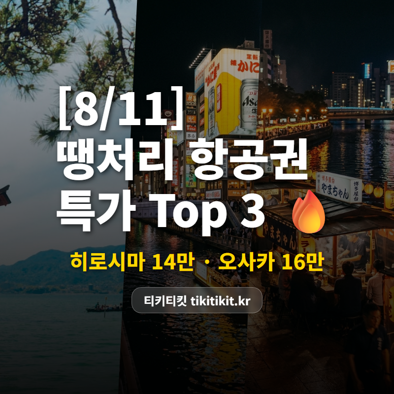

[8/11] 땡처리 항공권 특가 TOP 3 | 히로시마 14만원, 오사카(간사이) 16만원 ✈️

히로시마 왕복 14만원대, KTX보다 싸네요 🚄
이 정도 가격의 항공권은
자주 나오지 않아요!
🏆 8/11 추천 특가 TOP3
🥇 1위
인천 ↔ 히로시마 (일본)
제주항공 · 9/17(목)~9/23(수) · 6박 7일
143,900원

🥈 2위
부산 ↔ 오사카(간사이) (일본)
이스타항공 · 9/1(화)~9/4(금) · 3박 4일
161,900원

도톤보리에서 타코야끼 한 입 🏯
🥉 3위
부산 ↔ 후쿠오카 (일본)
제주항공 · 8/25(화)~8/27(목) · 2박 3일
176,000원

하카타 라멘의 본고장에서 진짜 돈코츠 한 그릇 🍜
※ 유류할증료/텍스 포함 왕복 총액 기준
※ 좌석이 빠지면 가격이 바뀌거나 사라질 수 있어요.
💡 에디터 픽 : 1위 인천-히로시마

사진: Unsplash
인천-히로시마 왕복 143,900원!
제주항공 직항으로
6박 7일 알찬 일정입니다.
왕복 14만3,900원이면
KTX 왕복보다 싼 해외여행이에요.
📌 인천 출발은 뭐가 있을까?
이번 인천 출발 추천 라인업!

✈️ 다카마쓰 147,600원 (에어서울)
8/26~9/1 · 6박 7일 일본 소도시 여행!

✈️ 선양 198,900원 (중국남방항공)
8/26~8/31 · 5박 6일 새로운 여행지 탐험!

✈️ 호치민 207,000원 (썬푸꾸옥항공)
8/28~8/31 · 3박 4일 쌀국수 + 카페거리 탐방!
✨ 이번 주 항공권 꿀팁
✈️ 지방 출발은 공항 인파도 적어서 체크인·보안검색이 훨씬 빠릅니다.
💰 초특가 항공권은 날짜 변경이 어려울 수 있으니, 일정 확정 후 예약하세요.
💡 해외 데이터 TIP: 공항 로밍보다 이심(eSIM)이 평균 30~50% 저렴합니다.
오늘 소개한 특가 외에도
매일 새로운 땡처리 항공권이 올라오고 있어요.
혹시 원하는 날짜나 목적지가 따로 있다면
한번 들러서 확인해보세요 😊
전국 여행사의 땡처리 항공권을 한눈에!
#땡처리항공권 #특가항공권 #항공권싸게사는법 #항공권최저가 #해외여행꿀팁 #티키티킷 #8월항공권 #8월해외여행 #히로시마여행 #오사카(간사이)여행 #후쿠오카여행